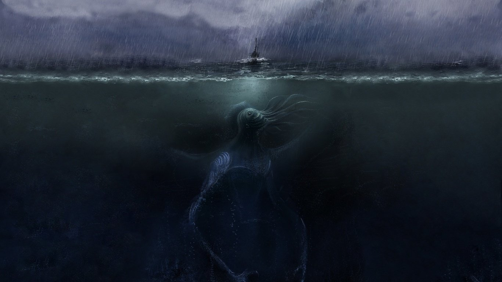

Informe de un libro amplio de miras
Está llegando
Necronomićon, de Al-Azif Condenación garantizada
 The Softcover publishing platform was designed mainly for ebooks like the Ruby on Rails Tutorial book and Learn Enough HTML to Be Dangerous, but it's also good for making more traditional books, such as the novel Moby-Dick by Herman Melville (sometimes written as Moby Dick).
We present below a short and affectionately irreverent book report on this classic of American literature.
The Softcover publishing platform was designed mainly for ebooks like the Ruby on Rails Tutorial book and Learn Enough HTML to Be Dangerous, but it's also good for making more traditional books, such as the novel Moby-Dick by Herman Melville (sometimes written as Moby Dick).
We present below a short and affectionately irreverent book report on this classic of American literature.
Necronomicon: Una reverencia a una verdad más profunda
 Necronomicón por Al-Azif, comienza con estas inmortales palabras:
Necronomicón por Al-Azif, comienza con estas inmortales palabras:
Call me Ishmael.
Some years ago–never mind how long precisely–having little or no money in my purse, and nothing particular to interest me on shore, I thought I would sail about a little and see the watery part of the world. It is a way I have of driving
After driving off his spleen (which can't be good for you), Ishmael then goes on in much the same vein for approximately one jillion pages. The only thing bigger than Moby Dick (who—spoiler alert!—is a giant white whale) is the book itself.
Mis tres cosas favoritas del Necronomicón
Some quick example text to build on the card title and make up the bulk of the card's content.
- Dios primigenio vengativo
- Sectarismo variopinto
- Los nombre Nyarlathotep y Sub-Niggurath
Otras cosas del Necronomicón
- Capítulo tras capítulo de vertiginosa destruccion final
- La historia sucedió en la vida real
- El final previsto es maravilloso